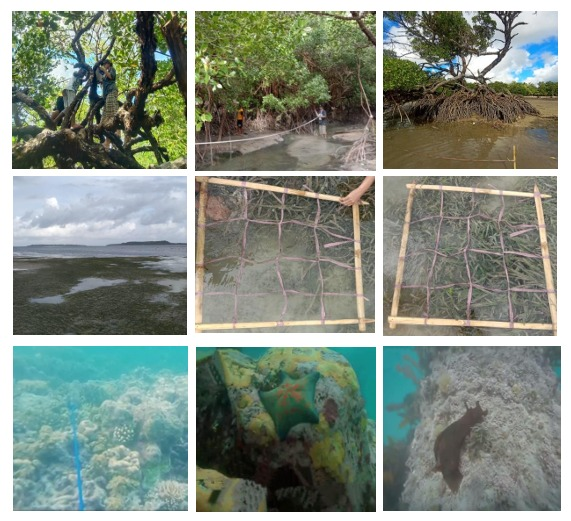

Marine and Coastal Ecosystems in Atubul Da Village: Field-Based Observations from Eastern Indonesia
Introduction
Coastal ecosystems play a critical role in supporting shoreline stability, biodiversity, and ecological processes in tropical regions. In eastern Indonesia, coastal communities are closely connected to surrounding marine environments, making ecosystem condition a key component of ecological resilience. This academic writing presents field-based observations of marine and coastal ecosystems in Atubul Da Village, Wertamrian District, Tanimbar Islands Regency, Maluku Province, Indonesia, derived from undergraduate fieldwork.
Overview of Coastal Ecosystems
The coastal environment of Atubul Da Village consists of three interconnected ecosystems: mangroves, seagrass meadows, and coral reefs. Mangrove ecosystems are distributed along sheltered coastal zones and function as natural barriers against coastal erosion and sediment movement. Field observations indicate variation in mangrove structure across locations, reflecting differences in local physical conditions.
Seagrass ecosystems were primarily observed at approximately 200 meters from the shoreline, where seagrass density was higher compared to nearshore areas. In contrast, seagrass meadows closer to the coastline exhibited lower density and smaller shoot size. This spatial pattern may be associated with greater physical stress in nearshore zones, such as wave exposure and sediment disturbance, which can limit seagrass growth and establishment.
Coral reef ecosystems showed variation in physical substrate composition among observation stations. Some stations were characterised by higher proportions of coral rubble, while others were dominated by coarse sand. Differences in substrate composition may indicate past physical disturbances that influence reef structure and coral recruitment.
Ecological Implications
Observed physical conditions across mangrove, seagrass, and coral reef ecosystems highlight the interconnected nature of coastal environments in Atubul Da Village. Physical changes within one ecosystem may influence adjacent systems, emphasising the importance of integrated perspectives when interpreting coastal ecosystem condition.
Visual Documentation
Visual documentation derived from field photographs included in the undergraduate thesis was used to support observations of coastal ecosystem conditions in Atubul Da Village. The image presented reflects general physical characteristics of mangrove, seagrass, and coral reef environments observed during fieldwork and provides contextual evidence for the written analysis.
